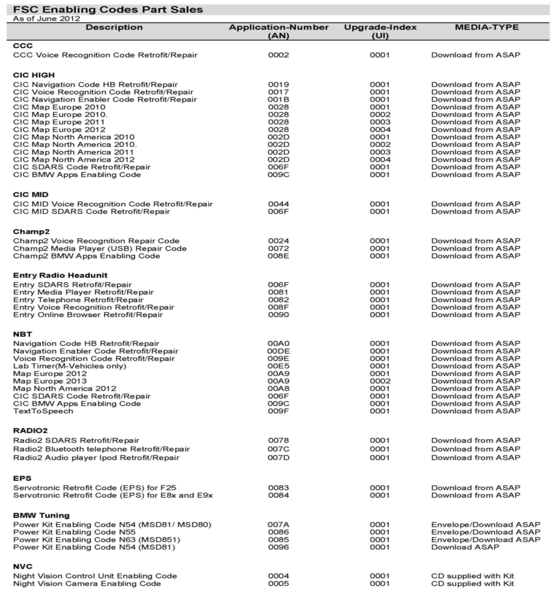

CCC(R) - Enabling Code Info.
SI B09 05 09Programming/Coding Explanations
June 2012
Technical Service
This Service Information bulletin supersedes SI B09 05 09 dated March 2012.
[NEW] designates changes to this revision
SUBJECT
Enabling Code Information
MODEL
All
INFORMATION
When ISTA/P requests an Enabling Code during a programming session, only an Application ID and Upgrade Index are shown. The [NEW] attached cross-reference will help identify which enabling code is required:
For further information on the use of enabling codes, refer to SI B09 04 09.
ATTACHMENTS

FSC Enabling Codes Part Sales